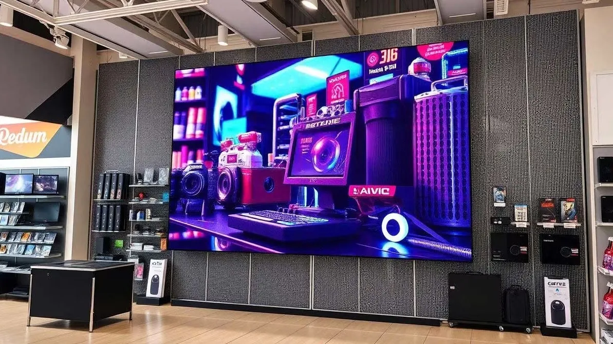
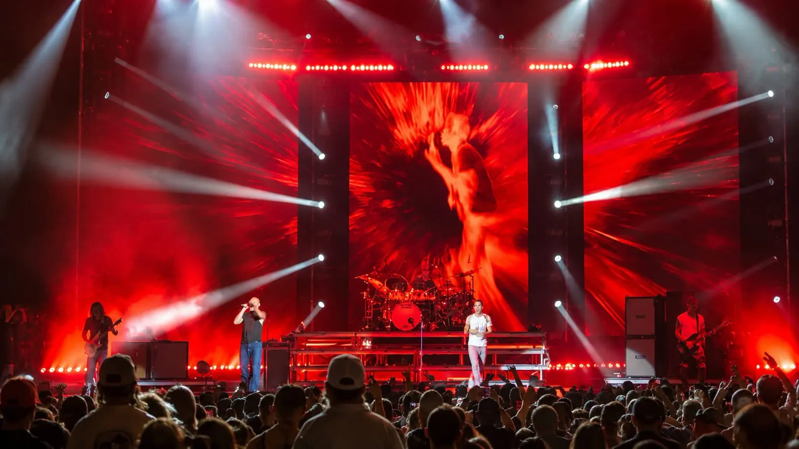
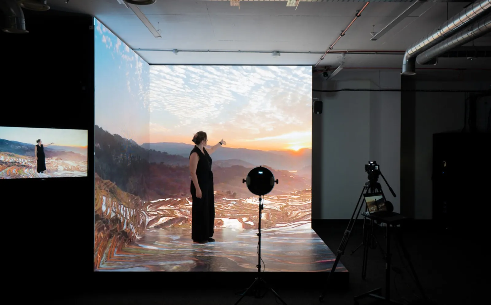

By David
For a hotel lobby, the display solution that usually fits is a fine-pitch indoor LED video wall designed as part of the interior — not a rental cabinet hung on the wall, and not an advertising-bright screen. Choose the pixel pitch from the closest distance at which guests will actually look at the wall. Set brightness so the image stays comfortable in soft interior light and remains readable when daytime sun enters through the lobby glazing. Specify cabinets that can make clean corner and edge joins, and prefer a sealed COB or protected fine-pitch surface where people and luggage pass close to the wall. Quiet cooling and hidden or front service access are part of the same decision.
This article is the lobby-solution guide. Corridors, restaurants, ballrooms and outdoor facades are different jobs; those zones are covered in the whole-property hospitality buying guide.
A lobby is a design space as much as a functional one. Guests form an impression in the first seconds, and a screen that looks bolted on, too bright, or poorly joined undoes that impression. The right solution is an indoor fixed LED wall whose size, finish and content are designed with the interior, then specified for pitch, daylight, corners, noise and service.
| Lobby situation | Solution to prefer | Series to start with |
|---|---|---|
| Feature wall viewed from a few metres, 16:9 or a similar rectangle | Fine-pitch indoor LED, 16:9 cabinets, low-to-moderate brightness with dimming | M-PRO indoor small pitch (SMD or GOB, 16:9 cabinet) |
| Guests stand close to the wall, or luggage may brush the surface | Fine-pitch indoor COB, or a protected GOB surface, with front service | CV-PRO fine-pitch indoor COB |
| An irregular opening, column wrap, or a wall that is not 16:9 | Indoor fixed cabinets that can be tiled to the opening, with planned corner modules | R-PRO indoor fixed (640×480 mm cabinet) |
| Reception backdrop or smaller information panel | Smaller indoor LED at a moderate pitch, carefully dimmed, not an advertising cabinet | M-PRO or R-PRO, sized to the joinery |
LCD can still be the right choice for a small enclosed board behind a desk. Once the feature is a wall, a column, or any surface that must be seamless, LED is the display type that can be built into the architecture.
Pitch should be set from the closest viewing distance, not from a desire to buy the finest module in the catalogue. A useful starting point is that a guest should not see the pixel structure at the distance where they actually pause — in front of a feature wall, at the reception desk, or on the route to the lifts.
Feature walls that people approach often sit in a fine-pitch range around P0.9 to P1.8. A wall mounted higher, or read mainly from across a large lobby, can use a slightly coarser pitch without looking cheap. Spending the budget on a tighter pitch than the viewing distance requires does not improve the first impression; spending it on finish, corner joins, dimming and quiet cooling often does.
If the wall also carries wayfinding or event titles, test a sample of the actual typeface at the chosen pitch and distance. Text that is sharp on a drawing can break up on a coarser module once it is installed.
Figure 1 shows an indoor LED installation.

Hotel lobbies are usually softly lit in the evening, but many are also daylit. A wall specified only for the evening scene will look washed out when morning sun hits the floor; a wall specified at advertising brightness will glare at night and fight the interior design.
The practical answer is a cabinet with enough brightness headroom for the worst daytime condition, plus smooth dimming or automatic brightness control so the evening setting can drop to a hospitality level. Measure the worst-case ambient light at the wall — late morning on a clear day is often harsher than the architect's night rendering — and write both the maximum and the occupied evening target into the specification.
Match the screen's white point and colour temperature to the lobby lighting. A warm interior with a cool, blue-white wall looks like a leftover monitor. Setting the white point with the lighting designer is a small step that makes the content feel part of the space. See also the colour temperature guide.
Corners are where a lobby wall either looks architectural or looks like a stack of boxes. If the design wraps a column, turns an L-shaped niche, or meets a stone or timber reveal, the join has to be specified, not improvised on site.
Ask for cabinets or modules intended for internal and external corners, or for a custom frame that holds a planned mitre. Agree the detail with the interior designer, including how the LED surface meets adjacent materials, and require a mock-up of the corner before the full wall is built. A standard flat cabinet forced around a turn will show a seam, a dark gap, or a sudden change in pitch that guests notice even if they cannot name it.
The same discipline applies to edges. A wall that stops short of the joinery, or sits proud of a marble cladding line, reads as equipment. A wall that is designed flush with the surround, with service access from the front or from a concealed corridor, reads as part of the building. Custom cabinet work is covered further in the custom cabinet guide. R-PRO's 640×480 mm cabinet is often a useful starting grid when the opening is not a 16:9 rectangle.
Figure 2 shows an indoor LED installation.

The screen's finish matters as much as its image. Cabinet colour, bezel treatment and the junction with adjacent materials should be issued with the interior drawings, not left to a standard frame. Content should be calm: brand imagery, art, gentle motion, or a simple information layer that can be read in a few seconds as guests walk to the lifts. Loud, fast commercial spots belong in a different part of the property, if they belong at all.
If the wall also carries wayfinding or event schedules, keep typography large and the hierarchy simple. A calm background with a clear information layer does both jobs; a dense poster does neither. For the wider content plan across restaurants, corridors and ballrooms, use the hospitality buying guide.
A lobby is a quiet space. Fans that are acceptable in a control room can be intrusive here. Choose low-noise cooling, use a lower brightness operating point where the daylight allows, and consider locating noisier equipment away from the guest area with a planned air path. This is easier to design in than to retrofit, as the cooling and ventilation guide explains.
A lobby screen must be serviceable without a scaffold in front of arriving guests. Front-service cabinets, or access from a concealed corridor behind the wall, should be agreed before the surround is built. Keep a small stock of batch-matched spare modules on site so a fault can be cleared quickly. A dark feature wall is visible to every arrival, which is why continuous-duty components and a documented service route belong in the specification, not in a later maintenance conversation.
Keep calibration data and content files with the hotel's engineering records. When a module is replaced, the white point and brightness should match the rest of the wall so the feature still looks intentional years after opening.
Write the specification around the design intent, the size and shape, the finish, the closest viewing distance and pitch, the daytime and evening brightness targets, the colour temperature, the noise limit, the corner and edge details, the content style, and the service access. Require a sample or a corner mock-up where the architecture is unusual.
To turn a lobby drawing into a product recommendation, contact Asia Vision with the interior and lighting plan. We can help you compare M-PRO, R-PRO and CV-PRO against the pitch, daylight and join details of the space. Standard warranty on these series is 3 years.
Share your interior and lighting plan, and we will help specify pitch, brightness, corner joins and a cabinet series that fits the space.
Request Lobby SpecChat on WhatsApp